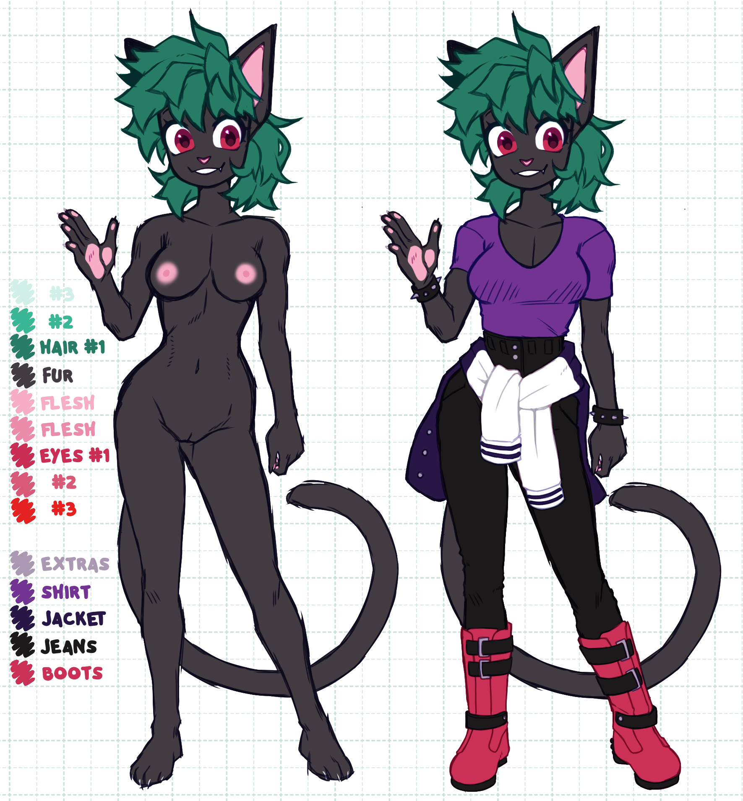

Maezie’s Bio
Maezie Delilah Rosse⌗
| Catergories | Details |
|---|---|
| Nicknames | Mae, mae-mae |
| Species | Cat (Maine Coon/Bombay mix) |
| Age | Young adult (>18) |
| Gender | Female |
| Pronouns | She/Her & They/Them |
| Sexuality | AroAce |
| DOB | 13th April |
| Marital Status | Single |
| Place of Birth | ??? |
| Residence | New Tymes City |
| Key abilities | Energy Manipulation, Peak feline abilities, Broadsword Proficiensy |
About:⌗
Maezie Delilah Rossi, or just Maezie, is a Feline Vigilante living in New Tymes City. Using her alias of “Z-lyn3”, she fights against the dark criminal underbelly of the city, as well as fighting against the corrupt corporations that seek to turn the city into their own personal capitalist hellscape
Appearance:⌗
Maezie has a small and slender frame, with a mostly hourglass shaped body adorned with short, dark grey-ish black fur, as well as a similarly coloured tail. Her hair is short and messy green, with slightly longer hair on the back of her head. Her nose, as well as the tips of her fingers, the inside of her ears and her nipples all possess light pink skin. In terms of attire, the most common throughline is some form of spiked bracelet and collar, usually a black one with short spikes if she is in sleeping attire, but usually wears more spiked clothing when she is out and about. (Section is temporarily unfinished due to upcoming outfit changes)
Character:⌗
Maezie is not one to quickly open up her feelings, due to past rejections and her own personal issues, usually resulting in her keeping to herself especially on missions. However, to those who she is familiar with, she’s far more eccentric and outgoing, easily making jokes with her fellow teammates and friends.
Abilities:⌗
Due to an incident that Maezie has seemingly no memory off, she is capable of manipulating different forms of energy; The main forms of energy she is known to manipulate are kinetic energy, electrical energy, thermal energy and radioactive energy. As a result of this ability, maezie is capable of manipulating the strength of her attacks by increasing the kinetic energy they have, as well as being able to apply freezing cold or burning hot temperatures to them, as well as low level control over fire and ice. She is also capable of controlling electricity, and is immune to radiation. However, a key drawback to her abilities is that prolonged usage of her abilities can cause damage to her body, with more excessive usage potentially leading to permanent or even fatal damage. The only ability exempt from this is the radiation immunity, an ability that is permanently active at a low level. Gear like the Assault Boots and the Battle Gauntlets do mitigate some of the downsides, but it’s not a permanent solution. Only Thorough training and getting used to her powers will allow Maezie to use her powers to their full extent.
Outside of her abilities, she also is very physically and mentally adept, due to training from a fairly young age. As a result of this, she is capable of performing feats that far exceed the capabilities of a normal feline.
Gear & Weapons:⌗
Both in the real world and in cyberspace, Maezie has an extensive amount of gear and weapons at her disposal, as well as different upgrades to said gear and weapons, making Maezie into a very versatile combatant.
Weapons:⌗
Moonlight Sonata:⌗
Despite it’s macabre name, the Moonlight Sonata is a powerful photon broadsword, built out of the supposed remains of the legendary sword Caledfwlch. The sword is seemingly the only weapon in Maezie’s arsenal that can transcend the physical world, following her into cyberspace.
Dual Viperions:⌗
The Dual Viperions, a pair of black and neon green energy pistols, modified from a pre-existing energy pistol model to suit maezie to feature a modular system. Due to it being modular, it can be modified to suit multiple different scenarios.
Gear:⌗
Assault Boots⌗
The assault boots, also known as the “Assisted Surface Scaling and Utility Traversal Boots”, or the “big stompers” by Maezie, are a pair of highly advanced cybernetic boots, which take the form of black studded platform boots. The boots allow the user to not only kick off of walls to gain altitude, but also allow the user to perform an in-air jump due to a series of null-gravity repulsors.
Battle Gauntlets:⌗
The Battle Gauntlets, much like the Assault boots, are a pair of highly advanced cybernetic gloves, which take the form of a pair of black fingerless gloves with spikes around the wrist. The wrist allow for better control of Maezie’s energy manipulation, as well as having a built-in PDA to allow maezie to keep track of vigilante tasks, as well as functioning like a smart watch.
Vented Face-Mask⌗
The vented face mask, as the name would imply, is a face mask designed to cover up Maezie’s mouth and nose. While stylized like a digital pair of jaws, the face mask allows for the filtration of toxins and smoke from the air, as well as concealing Maezie’s identity by hiding her face and modulating her voice (the voice modulation is usually disabled by Maezie’s choice).
Relationships⌗
STILL IN DEVELOPMENT<
Reference Images⌗
STILL IN DEVELOPMENT<
Gallery⌗
STILL IN DEVELOPMENT<
Trivia⌗
- Her Assault boots, albeit more based on the appearance of goth/emo platform boots, are actually based off of the Sun Greaves from the indie game Pseudoregalia, especially in how both the Sun Greaves and the Assault Boots allow Sybil and Maezie respectively to perform in-air kicks and wall kicks
- Her favorite food is Oven-Cooked chicken wings, with her favorite ones being from a small restaurant/pub called “The Drunken Maiden”, where the wings in question are cooked with a crispy skin, succulent meat underneath, and sauced in a fruity and sweet but spicy sauce, served alongside a portion of chips with ranch dressing.